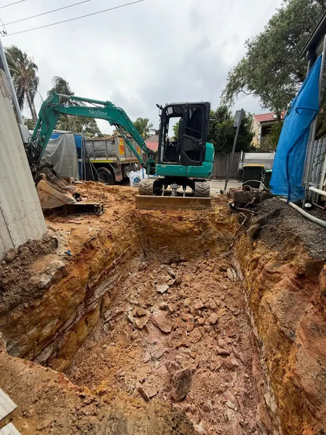
Below the plans“We hit rock at a metre.”
A bucket alone won’t get through Sydney sandstone, and the job stalls.
Depth 0.00 mStreet levelSydney, NSW
Skyline Excavations digs basements, footings, pools and driveways across Sydney, and cuts through the sandstone that stops other crews.
Google rating from 50 reviews
First machine: a 1.7 tonne mini and a lot of early mornings
Registered company, ABN 28 636 538 424
Excavation, demolition and civil from one crew

Below the plansA bucket alone won’t get through Sydney sandstone, and the job stalls.
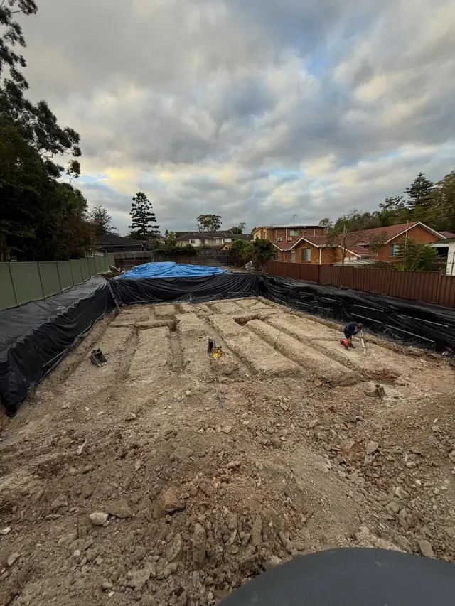
On the dayOne no-show pushes the steel fixer, the pour and the inspector.
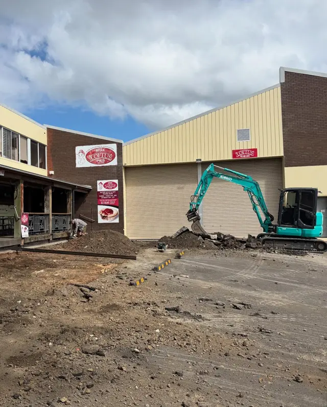
After the digSpoil on the footpath and levels out. The next trade starts by fixing it.
A clear, level block ready for the builder, with the waste gone the same day and the neighbours still talking to you.
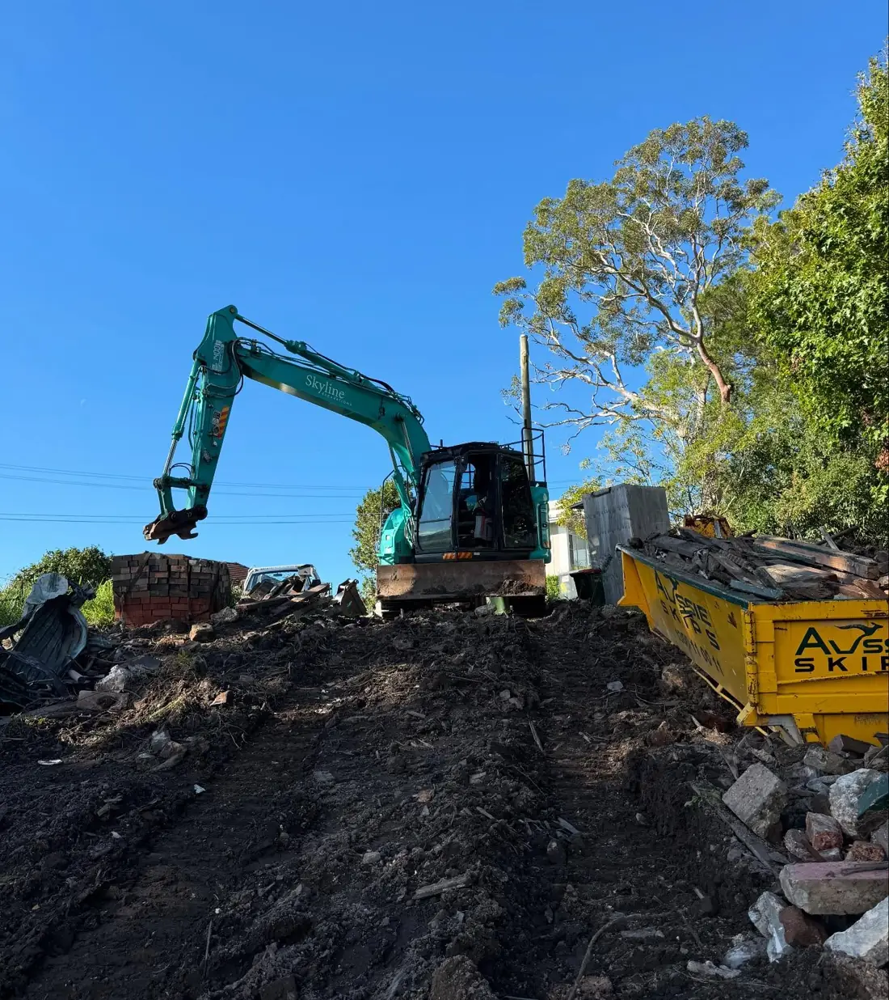
Footings dug to the engineer’s marks and clean enough for the steel fixer to start the same afternoon.
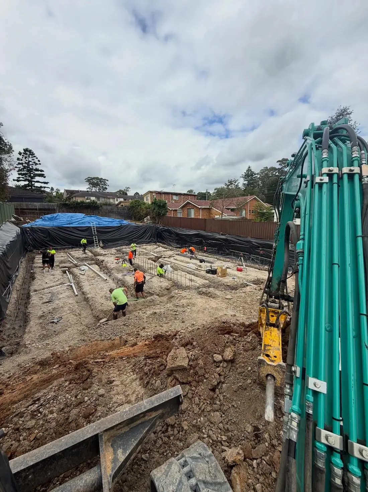
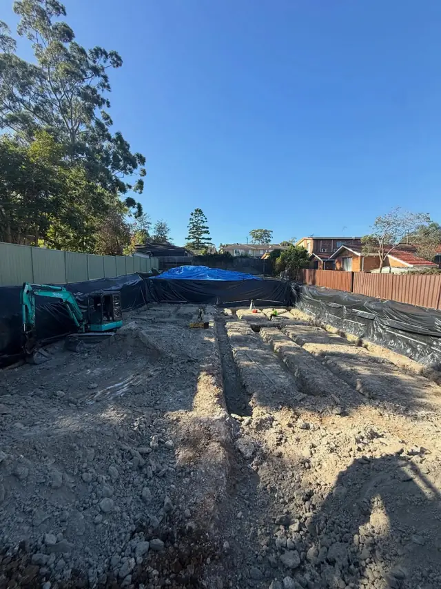
Pool shells, driveways and level pads cut clean and to height, even in a tight backyard.
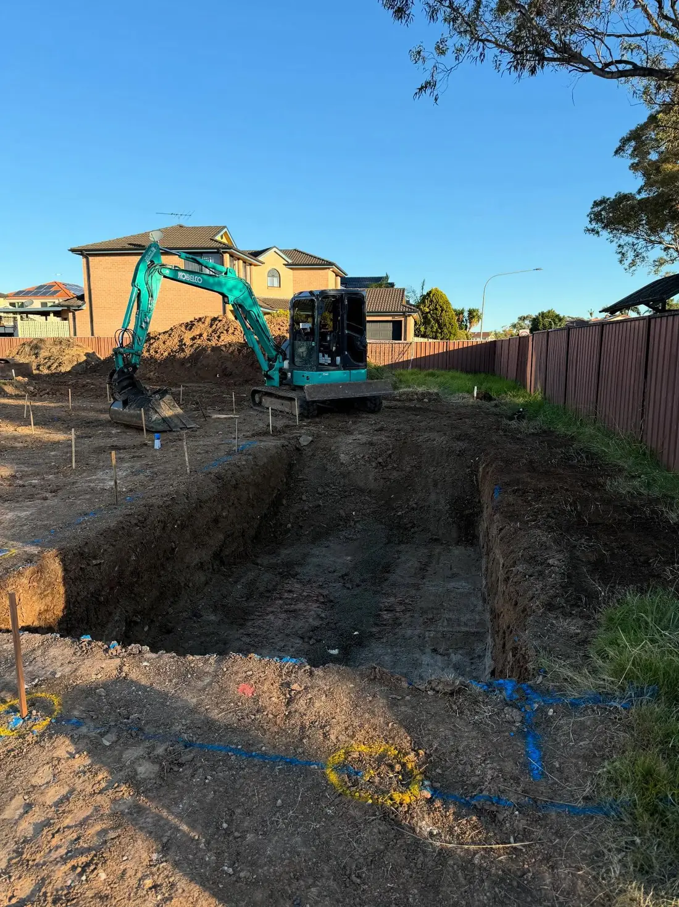
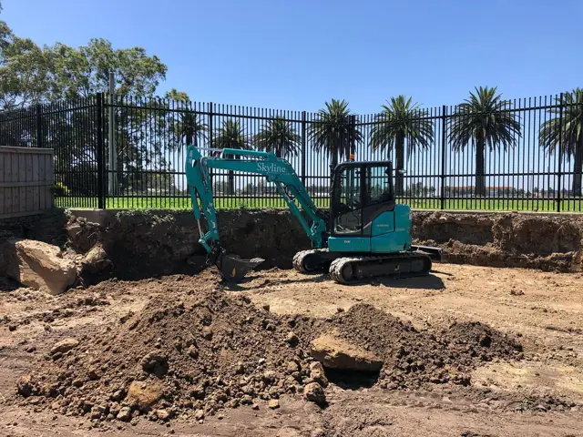
Sandstone cut square, broken out and carted away, so the walls stand straight and the builder stays on program.
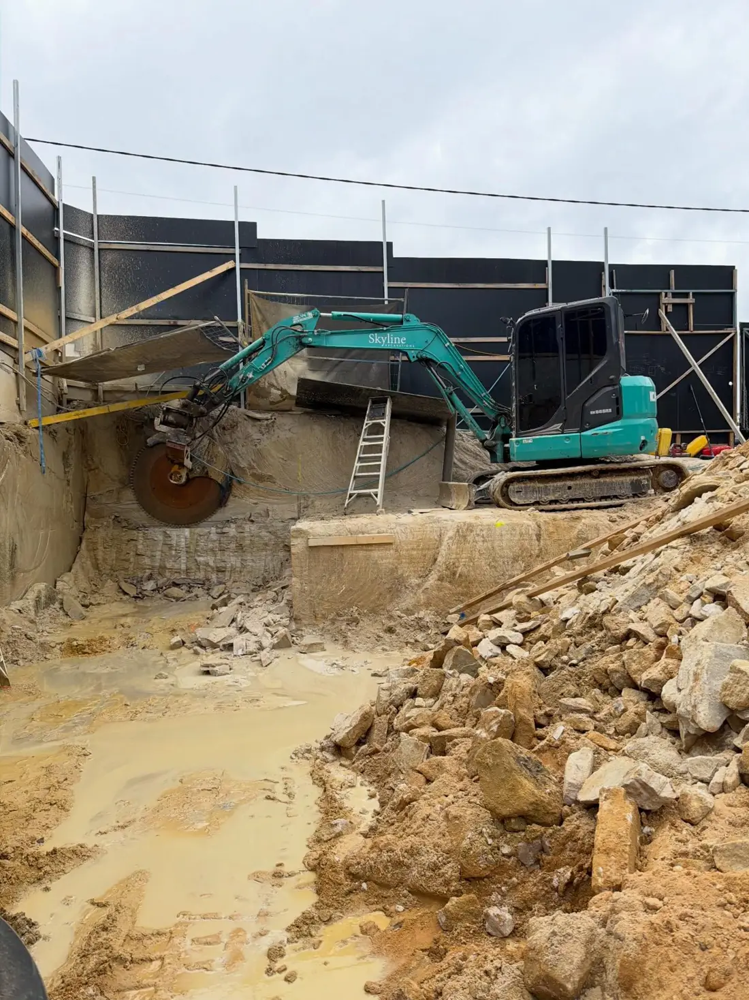
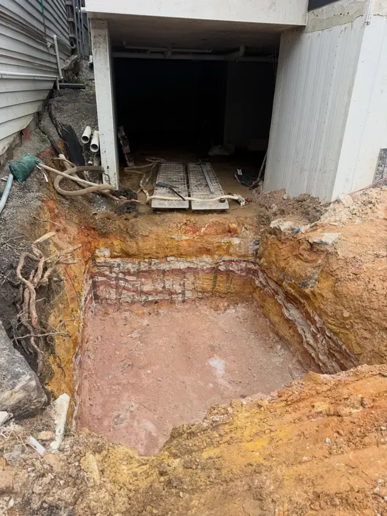
From the first cut to a clean basement floor, ready for the slab, on homes and commercial builds.
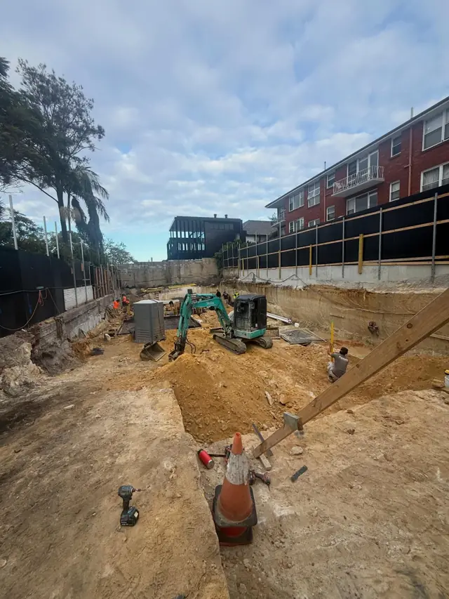
* Depths show a typical Sydney profile. Every block is different, which is why Marco walks your site before he quotes.
Real footage from real Sydney jobs. No stock video, no actors. This is what turns up on your site.
Not a call centre with a fleet behind it. Marco built Skyline job by job on word of mouth, and he still quotes the work and runs the sites.
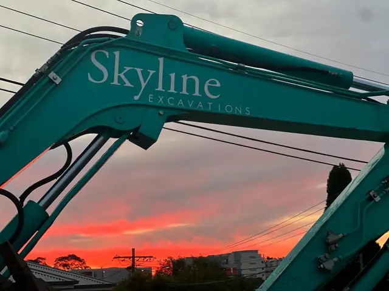
“It’s my own, my own brand, something to be extra proud of.”Marco, owner
One mini excavatorA 1.7 tonne machine and a lot of early mornings.
Skyline Pty LtdCompany registered. Fully licensed and insured.
A new KobelcoThe Skyline name goes on the boom.
A Sydney fleetBasements, pools, footings and rock work, with Skyline machines and a Skyline tipper.
No chasing, no surprises on the invoice. Four steps, and you know what is happening at each one.
Call, text or use the form. Send plans or a few photos of the site and access.
Marco checks access, soil, rock and where the spoil goes, then quotes clearly.
Right machine, right attachments and trucks booked for the spoil. Levels checked as we go.
Site left tidy and to level, so the builder, concreter or pool crew can start straight away.
Nine core samples from real Skyline jobs. Hover or tap one to open it up.
More jobs every week on Instagram @skylineexcavations
From tight terrace streets in the Inner West to commercial basements and backyard pools in the suburbs. Recent work includes a basement in Drummoyne.
Not sure if we cover your suburb? Call 0411 232 265 and ask.
Yes. Skyline runs a hydraulic hammer for breaking rock and a rock saw for clean, straight faces along boundaries. Rock is the most common reason Sydney digs run late, so it is planned for in the quote.
Yes. Skyline has its own tipper and books extra trucks for bigger jobs, so dirt and rock leave site as the dig goes and the street stays clear.
Often, yes. The fleet runs from mini excavators up to mid-size machines. Send a photo of the access and Marco will tell you which machine fits.
Yes. Skyline Excavations Pty Ltd is fully licensed and insured, and certificates are available to builders on request.
Depth 9.00 mFinished floor level
Send the plans or a few photos. Marco will come back to you with a straight answer and a fair price.
0411 232 265